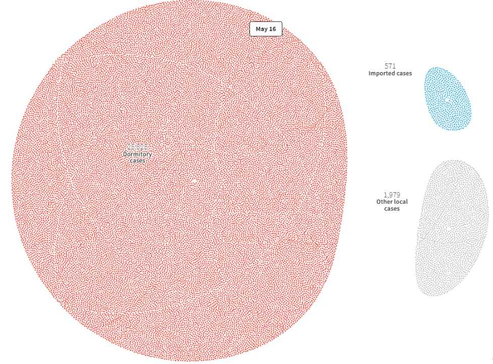
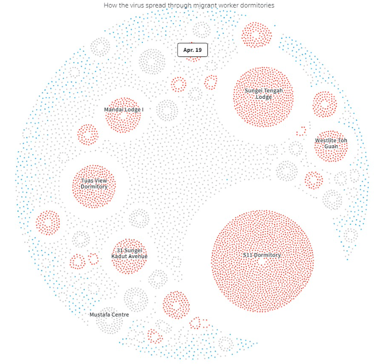
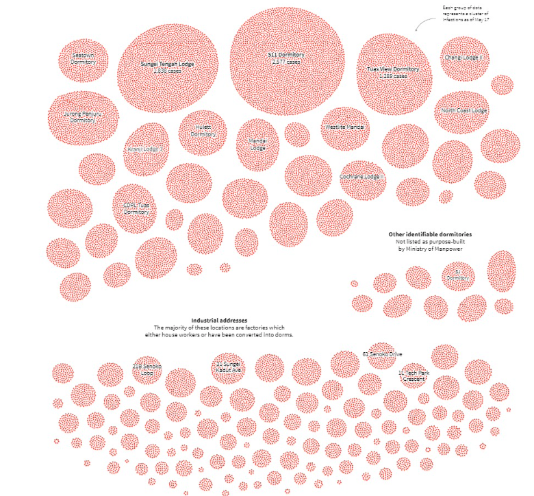
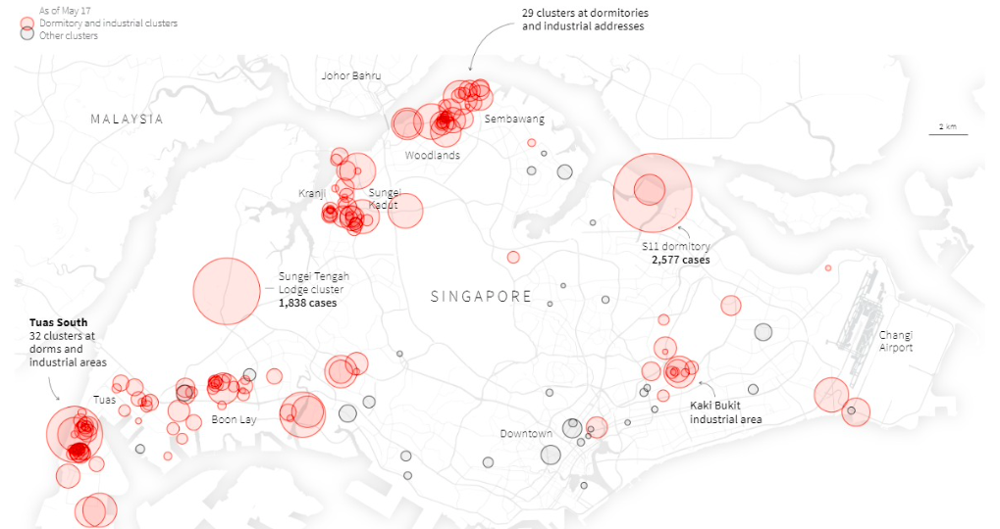

El mejor periodismo de datos se reúne en torno a los premios Sigma, patrocinados por Google News Initiative, cuyo fin es premiar los mejores trabajos de esta disciplina periodística. En esta segunda edición se recibieron un total de 545 proyectos de 68 países, de los cuales se seleccionaron únicamente 140. Finalmente fueron galardonados 13, y otros 7 consiguieron una mención especial. Muchos de ellos han tenido como tema principal la pandemia.
Un buen ejemplo de ello es
Anatomy of Singapore's outbreak
realizado por Manas Sharma y Simon Scarr. Se publicó en Reuters, concretamente en la sección de graphics, el 22 de mayo de 2020. Este reportaje interactivo nos cuenta cómo se propagó el virus en el país asiático a través los trabajadores extranjeros que compartían habitación, en su mayoría procedentes de Bangladesh, China e India. Para ello utilizaron como fuente el Ministerio de Trabajo de Singapur los datos que dio el Ministerio de Salud hasta el 20 de abril sobre los infectados por coronavirus.
El reportaje está dispuesto en la página web del medio inglés. Para poder leer el reportaje hay que ir desciendo con la rueda del ratón. El texto está en negro sobre un fondo blanco. Hay un total de seis visualizaciones, dos de ellas animadas.

01
En la primera podemos ver cómo se expande de forma circular el virus desde enero hasta el 19 de abril de 2020, aquel mes se registraron un gran número de casos entre los empleados extranjeros que convivían juntos. Como consecuencia, el Ministerio de Sanidad dejo de contabilizar los casos. El color azul se corresponde con los casos importados, el gris se refiere a los contagios entre locales y el rojo al de estos trabajadores extranjeros.
02
La segunda animación sigue la forma circular de la anterior y prosigue en su contabilización desde el 20 de abril hasta el 16 de mayo, pocos días antes de publicarse este reportaje de datos. En ella observamos de forma muy visual cómo los casos dormitorio (25.525) son superiores a los locales (1.979) y a los importados (571).


03
En la tercera visualización, que esta vez es estática, podemos ver en qué lugares de Singapur se concentraban los principales
dormitorios con infectados.
04
En la cuarta en qué sector trabajaban estos infectados. La quinta menciona que este tipo de dormitorios se concentran en áreas grandes y que estén más industrializadas. Por último, los autores plasman en un mapa los grupos dormitorios que había el 17 de mayo del pasado año.
